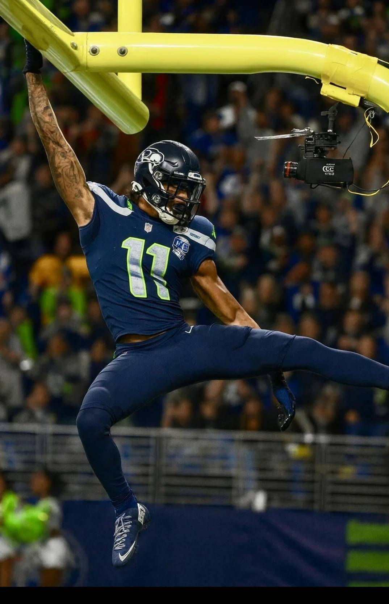
With just six games left in the regular season, we’re more than half way there. At this point, Kris is way ahead of the pack, Andy on his heels, and six teams behind them with between 858-837 on Points For. We’re in the thicc of it now my friends. Things seem pretty wide open, with last place just three games back from first, anything could happen, but we’re officially into the deep waters of the fantasy season.So, let’s give out some awards…
Midseason Awards
MVP: Jaxon Smith-Njigba: Kris sprung for him, and Kris has been sprung since. JSN is always open, Kris keeps winning, and he’s well on his way to his first playoff berth in the last many years.
LVP: Saquon Barkley: He’s been okay, but when you draft him in the top five, you need more. Pangy’s team is dying without Saquon’s last year MVP-esque performances, as he continues to spiral to the bottom.
Breakout Stars: * Emeka Egbuka: Since week one, it’s been on. Only more targets with Evans going out now, but the Bucs do seem to be slowing. * Can Skattebo: The tikkytokky pic of the year, Cam can’t be ignored. This man is a psychopath and we should all love him, unless we’re facing Andy’s squad.
Goodbye, My Lover: * DJ Moore: CJ’s man hasn’t had seven targets in a game all season. His best game was 12.8 against the terrible fucking Dallas D. He’s done. * AJ Brown: A couple bangers, but after the second he immediately is hamsrtung. Complaining on Twitter, being a diva, and hurting CJ for selecting him in the second round. * Tyreek Hill: Knee gone, happy to be out for the season, and we may never see him again. Sayonara, ya piece of shit.
Matchup of the Week London Tee Party (4-3) vs. Cook-n Lamb for my Nabers (3-4) Andy and Neil’s matchup has more at stake at the top of the standings, but the Comish Bowl is sports both of the highest projections and is the only matchup around 50%, though we should see some feisty $0 FAAB bids tomorrow with budgets waning.
What to watch: * Dallas vs. Denver - PJ has Lamb, I have Javonte and Ferguson. The potent Dallas offense meets a top defense - can PS2 hold down Lamb and help me get the W in fan life and fantasy life? * Rashee Rice had a huge first game, in limited snaps, might he be in for an even bigger game on MNF against the not so great Washington D? * Henry won’t have Lamar again, but he’s getting the start for Jake. The Chicago D has been suspect against the running game - hopefully Hundley gives them a better chance than Cooper Rush.
Waiver Wire Spice 🌶️ * $28 - Travis Hunter - Seif - He had a good game, so Seif paid $28 more than anyone else to put him on his bench in a week that Seif desperately needs players. Good stuff. * $8 - Orande Gadsen - Joel - Looked great again on TNF, as his usage continues to grow. Nice move, edging out Neil and Pangy. * $3 - Tez Johnson - CJ - Let’s give love to our Duckies, they’re everywhere! CJ looks to take advantage of the Evans-sized gap on his team by picking up this rookie stud.
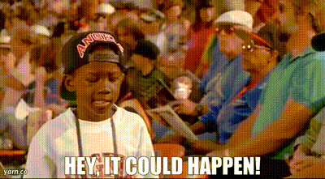
Since we’re all close enough to the playoffs, and all it is a chance, once you get in… I now present you with the… Hey, it could happen, mid-season power rankings!
1. Kris (5-2) ↔️
PF: 1003.96, FAAB: $39, L1
It doesn’t take much convincing here. Kris’s team is lapping the league, up a great week/nearly 150 in PF.
Hey, It Could Happen! Why could it happen? Jonathan Taylor, JSN, Bijan… Vidal? Pickens? I’ll stop there.
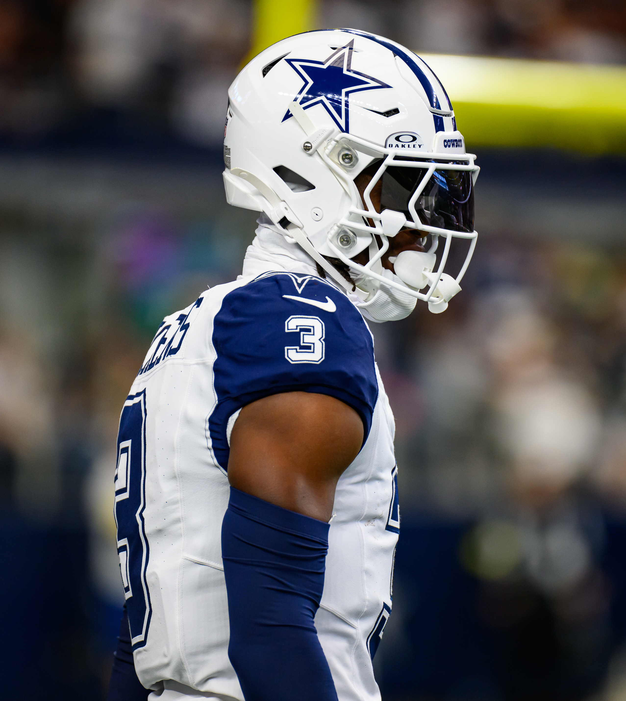
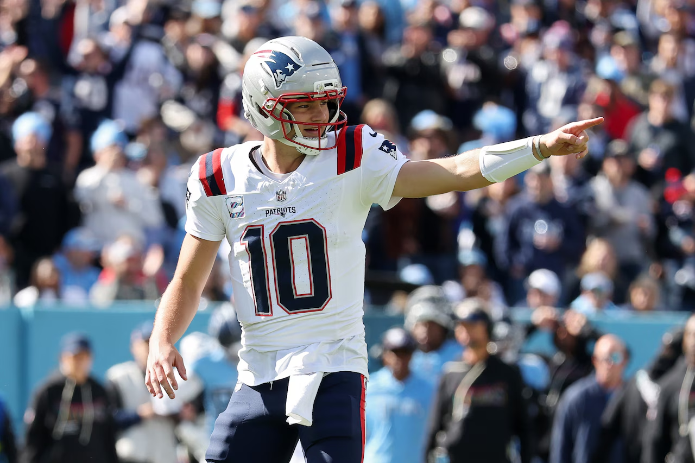
2. Neil (4-3) ⬆️
PF: 845.44, FAAB: $3, W4
A freight train with this momentum can’t be stopped, right? Neil rides his four-game win streak, but can’t unseat Kris for the top spot.
Hey, It Could Happen! Neil keeps riding his favorite player, Drake Maye, and he’s delivering. Neil can ride his way into the playoffs, just like the Pats will snatch the AFC Division title from the Bills.
3. Andy (5-2) ⬇️
PF: 855.62, FAAB: $4, W2
Wins, but drops a spot… to Neil? Well, it sure looks like Andy’s gonna just lay down to Neil this week, so let’s put him here before he drops next week.
Hey, It Could Happen!
Nacua comes back after the bye and deliver Andy from evil, with Skattebo as his Saint Peter.
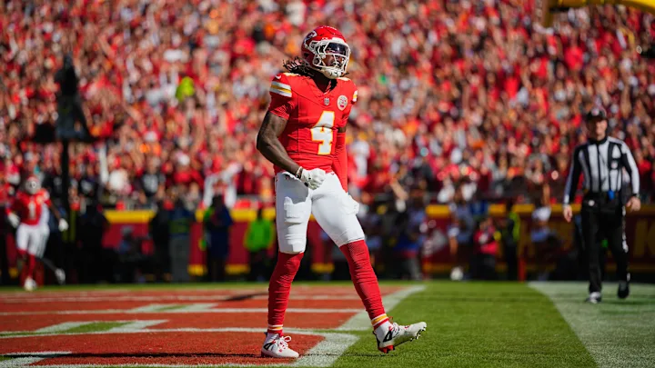
4. PJ (3-4) ⬆️⬆️⬆️⬆️⬆️
PF: 841.52, FAAB: $24, W1
By pedigree, he’s back…
Hey, It Could Happen! If only he had some beans, he’d be Cook’ing up a mean meal now that he’s some Rice and Lamb. That’s a scary combo.
5. Joel (4-3) ⬇️⬇️⬇️
PF: 843.18, FAAB: $17, L1
Hey, It Could Happen! Joel’s WR room has it, but can thy sustain it through the long season? St. Brown and Devante, have been great but unscathed, while BTJ has underperformed. If healthy and at their level, that’s a nasty floor for this team.
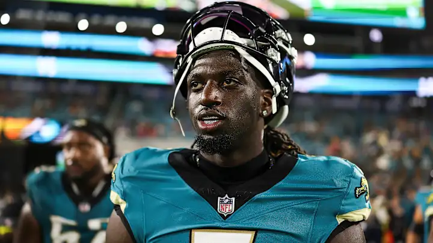
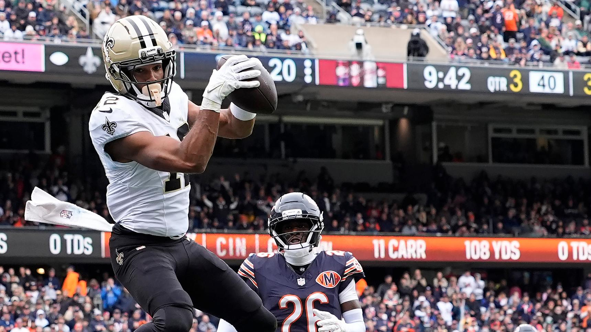
6. Chris (3-4): ↔️
PF: 789.84, FAAB: $66, W2
Hey, It Could Happen! I could be wrong, Olave’s career could outlast his next hit and carry CJ to the playoffs, as he’s currently sitting at WR11.
7. Jake (4-3) ⬇️⬇️
PF: 858.72, FAAB: $48, L2
Hey, It Could Happen! The Cowboys keep on Cowboyin - Javonte and Ferguson keep netting 40+ a game, keeping me in the mix week-to-week.
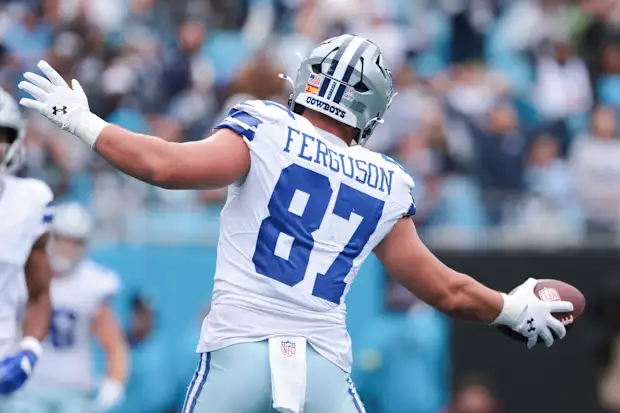
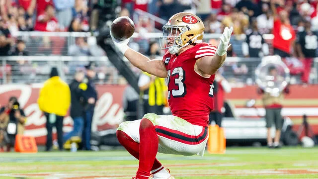
8. Seif (2-5) ↔️
PF: 837.94, FAAB: $2, L2
Hey, It Could Happen! Oof, looking rough this week, but CMC is the hollow-point any any week’s chamber. Judkins ain’t bad in the clip.
9. Tony (2-5) ⬆️
PF: 807.00, FAAB: $78, W1
Hey, It Could Happen! Ladd isn’t just a Ladd anymore! He’s come on strong over the last four weeks, and could be a needed rock in Tony’s lineup going forward.
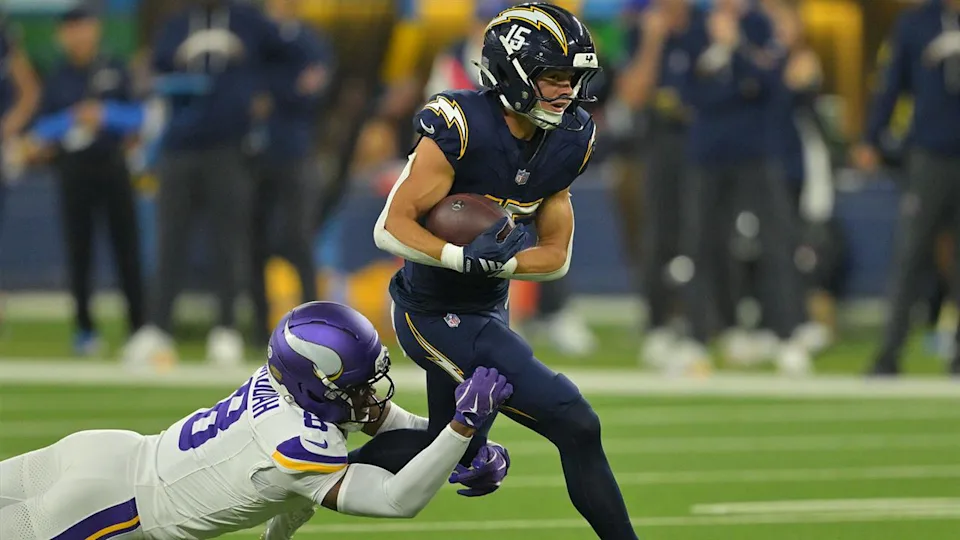
10. Pangy (3-4) ⬇️⬇️
PF: 757.72, FAAB: $12, L3
Hey, It Could Happen! Ever heard of Joshua Patrick Allen?
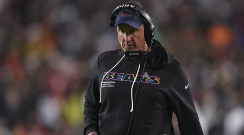
“Sometimes you ain’t good enough for somewhere else. That’s perfectly fine. I love being here.”
- Dennis Allen (and any player who’s been dropped then picked up in our league)
Good luck to everyone besides PJ! - Jake 💋